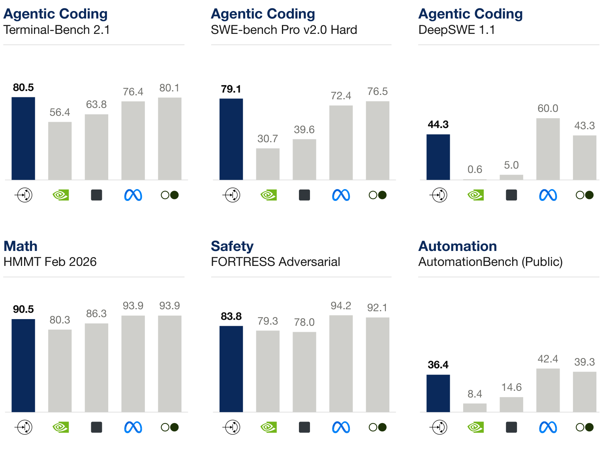

推出 Ripple-65B Preview：前沿开放权重模型
在 agent 编码领域达到美国开放权重模型的最先进水平
原文此处为一段时长 1 分 14 秒的视频。用户提供的 PDF 仅保留空白播放器，视频内容请参阅官方博客原文。
Ricursive Intelligence 是一家全栈人工智能实验室，通过联合优化硬件、软件和模型，构建能够自我改进的系统。
为了支撑我们的芯片设计平台，我们从零开始训练了一个语言模型，它在 agent 编码领域创下了美国开放权重模型的新纪录。我们针对自己的训练和推理服务平台优化了模型架构，从而显著提高了效率。
今天，我们发布 Ripple-65B Preview。它是为我们的 AI 芯片设计平台提供支持的专有模型的通用版本。该模型使用 12 万亿个 token 进行预训练，支持最长 1M 的上下文。Ripple-65B Preview 在 agent 编码方面表现出色，在 TerminalBench 2.1 上以 80.52 分达到美国开放权重模型的最先进水平，超过了参数规模大得多的美国开放权重模型，例如 Reflection Beam 501B（80.1）、Meta Muse Spark Open 816B（76.4）、Thinking Machines Inkling 975B（63.8）以及 NVIDIA Nemotron 3 Ultra 550B（56.4）。

Ripple 的稠密模型架构既提供了强大的推理能力，也实现了低延迟的 token 生成。模型较小的参数规模还使其能够在 NVIDIA DGX Spark 等本地设备上高效运行；与数据中心加速器相比，这类设备的计算 FLOPs 较高，而内存带宽相对较低。
Ripple-65B Preview 已在 Hugging Face、Together AI、GMI Cloud、OpenRouter 和 Fireworks 上提供。
以十分之一的成本达到美国开放权重模型的前沿水平
LLM 预训练的昂贵程度众所周知。2023 年，OpenAI CEO Sam Altman 表示，GPT-4 的训练成本超过了 1 亿美元。次年，Dario Amodei 表示，前沿 AI 模型的训练成本可能高达 10 亿美元，并预测到 2026 至 2027 年，仅预训练成本就将上升至 100 亿至 1000 亿美元。
相比之下，我们开发和训练 Ripple-65B Preview 仅花费了 3200 万美元，按我们尽可能掌握的信息估算，这相当于此前 agent 编码领域最先进开放权重模型成本的十分之一。1请注意，3200 万美元是我们从零开始的全部研发成本，包括预训练模型阶梯的开发、数据混合、评测、调试、合成数据生成、后训练方案开发，以及最终完整规模的预训练和后训练运行。
快速攀升的强化学习
我们没有投入算力，靠蛮力推动 RL 表现提升，而是围绕计算效率，仔细迭代 SFT 和 RL 训练方案。我们选择不购买任何后训练数据，而是自行设计合成数据流水线、质量过滤方法和覆盖度指标。
我们的混合 RL 方案在高质量的长程合成环境中，使用了截断重要性采样、分数中心化和线性长度惩罚。RL 任务根据模型的能力进行调整；随着模型能力提高，我们不断加入更困难的任务。
最终，RL 从一个强大的初始 SFT checkpoint 出发，实现了快速提升。我们仅用 140 万次 rollout，就在 TerminalBench 2.1 上达到了 80.5 分；所需 rollout 数量约为此前最先进模型 Reflection Beam 的七十分之一。
用户提供的 PDF 在此处的图表区域为空白，未包含可读取的曲线；请参阅官方博客。
协同设计的模型架构
Ripple-65B Preview 的架构旨在让模型能够在 NVIDIA 硬件上高效训练并提供推理服务。一个关键目标是：通过设计决策，降低预训练和后训练基础设施的复杂度，同时仍然具备强大的推理能力和 agent 能力。因此，我们选择训练一个现代化的稠密 Transformer 模型，而没有像其他实验室那样使用混合专家（MoE）架构。这项决策很快就带来了回报：即使只采用简单的分片方式，不使用定制内核，也不做量化，我们仍然能够从零开始训练出一个强大的模型，并在整个预训练和后训练过程中维持良好的 MFU（40%）。
Ripple-65B Preview 采用窄而深的模型形状，d_model 较小（5120），总层数为 80。为了提高推理能力，我们配置了更多的 attention head，同时提高 SWA 层与全局 attention 层的比例，并缩小 SWA 窗口，以抵消增加的成本。此外，我们还加入了 FFN 激活裁剪、gated attention、全局 NoPE 和 value residuals。
精心设计的模型阶梯实验带来大幅提升
我们通过一系列精心设计的模型阶梯实验，优化了 Ripple 的预训练方案。
我们的起点是 Olmo 3 的模型阶梯；在此基础上，我们在小规模模型上测试各种调整，重点提升编码能力。v1.0 阶梯采用了 StepFun 的 batch 大小和学习率 scaling laws；v1.1 则采用了我们新设计的阶梯，让架构维度与模型深度平滑扩展。v1.2 阶梯从 post-norm 基线切换到 pre+post norm，这在小规模下没有明显影响，但从 4B 规模开始带来了提升。v1.3 阶梯引入了 sigmoid gated attention。v1.4 阶梯（双流 mHC）在较小规模下效果不错，但在 4B 规模下没有带来提升，因此被弃用。v1.5 阶梯切换到全局 NoPE，并在训练最后增加了将学习率降至零的冷却阶段；v1.6 阶梯加入了 value residuals。在最终版本中，我们切换到自行构建的预训练数据集，大幅提高了代码的采样比例。
这些调整叠加在一起，使 4B 模型在代码上的计算效率——以 dolma_stack CE 衡量——最高提高了 16 倍。换句话说，我们最终的 Ripple 模型阶梯，只需 Olmo 3 阶梯十六分之一的计算量，就能达到相近的代码表现。请注意，Olmo 3 阶梯基线的斜率比 v1.0 及后续阶梯更平缓，这说明，随着规模进一步扩大，计算效率的提升幅度还会继续增加。
用户提供的 PDF 在此处仅保留了图例，曲线与坐标轴未打印出来；图例按原样保留。
结语
我们构建 Ripple-65B Preview，是为了开始打通模型与为其提供动力的硬件之间的闭环。该模型的一个内部版本为我们的 AI 芯片设计平台提供支持；随着我们不断向前沿扩展，我们期待看到新的能力涌现。
我们很幸运，能够在已有开源贡献的基础上开展工作，其中包括 Allen Institute for AI（AI2）的 Olmo 团队、Prime Intellect、RadixArk 和 NVIDIA 的贡献。强大的开源生态同样能够自我改进：贡献者让生态更强大，而更强大的生态又会吸引更多贡献者。
在 Ricursive，我们正有选择地招募杰出的研究人员和工程师，与我们一起，从模型到芯片，推进全栈 AI 的前沿。如果你有兴趣，请查看 https://www.ricursive.com/careers。
1 据报道，Reflection 等美国开放权重模型公司承诺每月投入 1.5 亿美元，使用 SpaceX Colossus 的算力训练模型。Reflection 表示，Beam 的预训练花费了 4 周，后训练也花费了 4 周。
© 2026 Ricursive Intelligence, Inc. 版权所有。